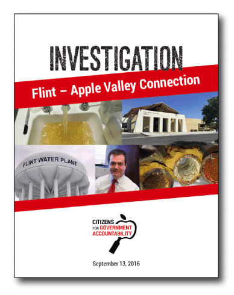

Category Archives: Commentary
Measure F could be your worst nightmare (Carloni)
Apple Valley voters be aware! A financial disaster like Adelanto could be in Apple Valley’s future, and all of us will be forced to pay for it.
Continue readingVote no on Measure F
Say no to Measure F
Letter: The devil’s in the details (Schepis)
According to the Daily Press (3/28/17) the Town of Apple Valley will ask voters to approve Measure F in June to facilitate their takeover of Liberty Utilities Water Company by issuing bonds in the amount of $150 million dollars, payable over 30 years at a rate of 12 percent.
Continue readingLetter: Fingers in cookie jars
Re: “Apple Valley: Water vote looms after Council’s approval of special election,” Daily Press, 3/10/17 …
It seems to me that the Apple Valley Town Council, in their attempt to produce government regulated revenue, is willing to destroy the town in the process. The town-run golf course comes to mind. What about the revitalization of Hilltop House? The town-run electrical grid? They have their fingers into so many cookie jars that they are unable to turn a profit in any of them. But, the next one will be the winner.
AVCE: Not much of a choice
Your endorsement of Apple Valley Choice Energy (AVCE) calls it a clear choice (“The Choice seems clear in Apple Valley,” Daily Press, March 12, 2017). This is only the case if you ignore several factors.
Continue readingWe know what’s best for you
There seems to be an attitude prevalent among the Apple Valley town staff and Town Council that we know what is best for you and the citizenry should be glad they don’t have to think about the water and electricity issue any more.
7 unanswered questions related to the ‘Flint-Apple Valley Connection’

{kind=link}
CLICK HERE TO DOWNLOAD REPORT!
Yesterday, influential conservative blog The Flash Report published an article which included summaries of the “Flint-Apple Valley Report,” which we released mid-September—sharing these nagging issues with a much wider audience.
At the end of the report, we posed 7 questions to our Town Government officials and Town Council members. Not one of them has been answered.
Instead of answers from Finance Director Marc Puckett, or anyone else in Town Government, we were subjected to defensive, carefully crafted letters to the editor from Council members calling these questions “mean-spirited.”
The questions still matter, and they are still unanswered.
Measure V respects Liberty Utilities customers’ rights
By Greg Sorensen
Liberty Utilities is proud to be Apple Valley’s new water provider.